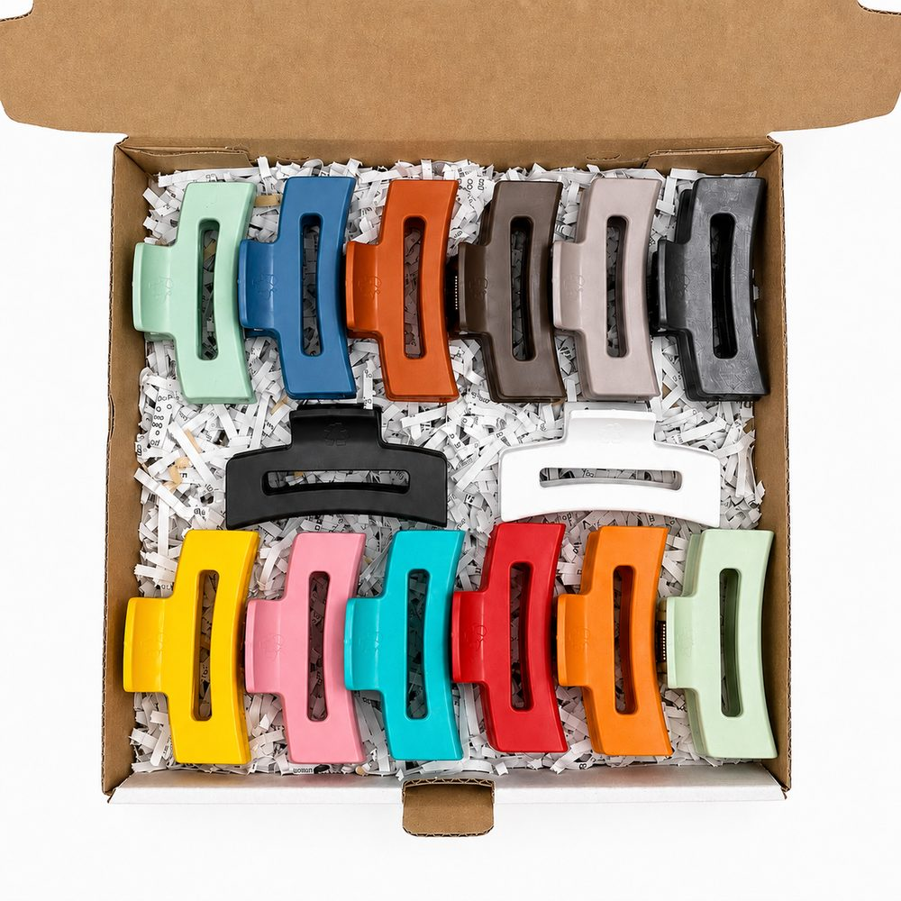
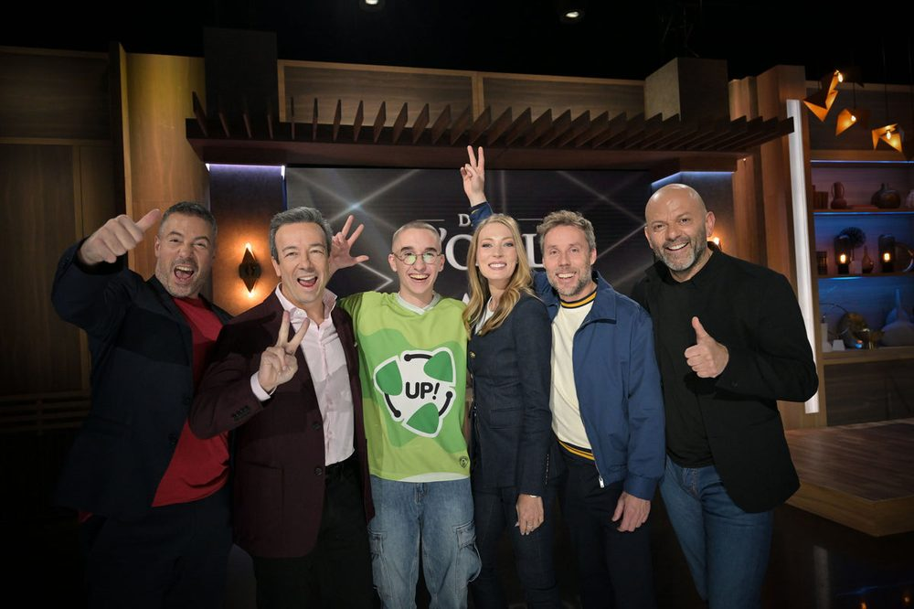
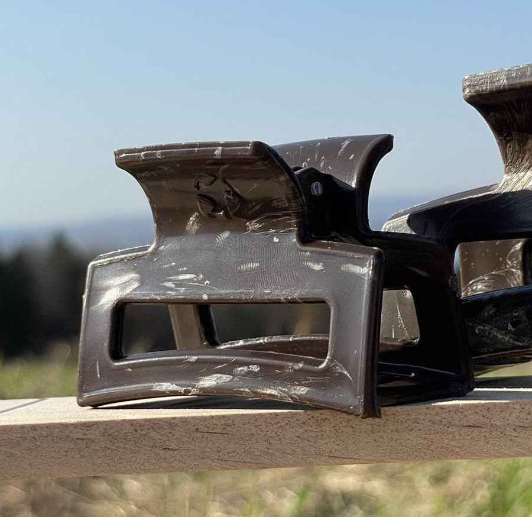
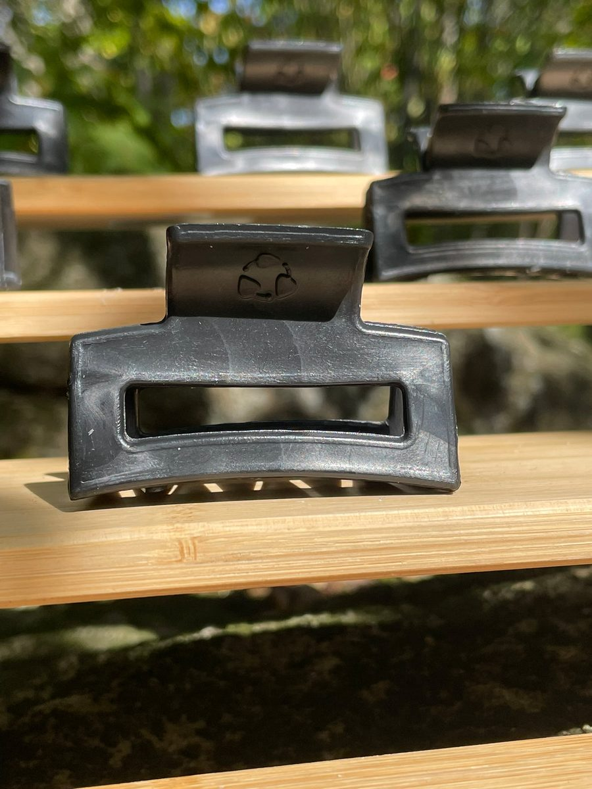
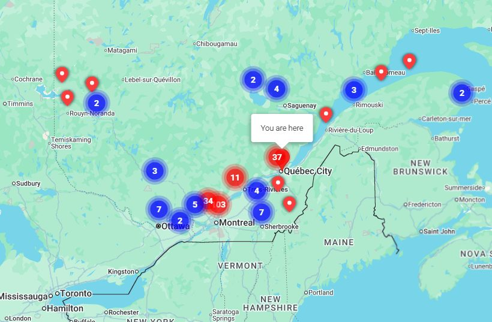
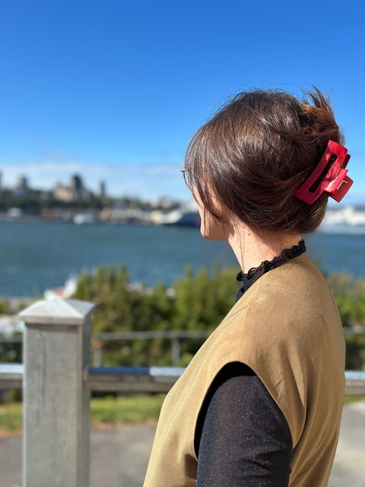
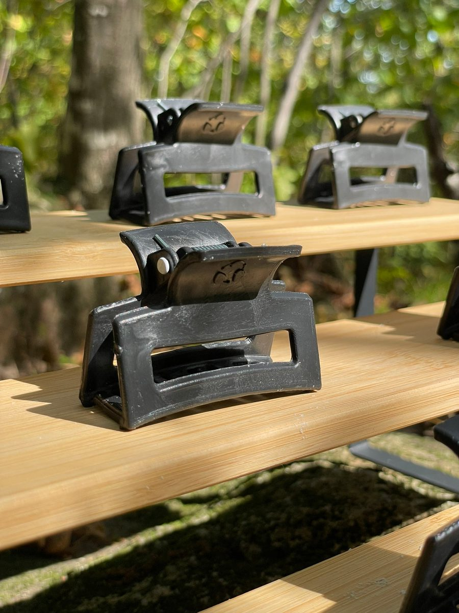
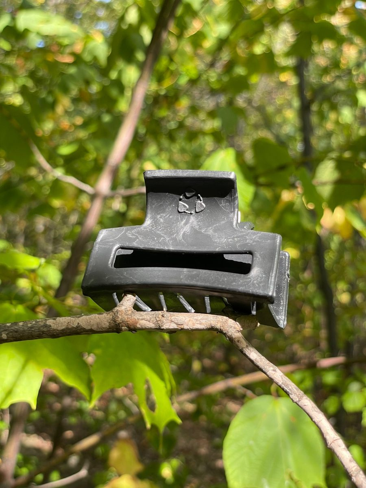
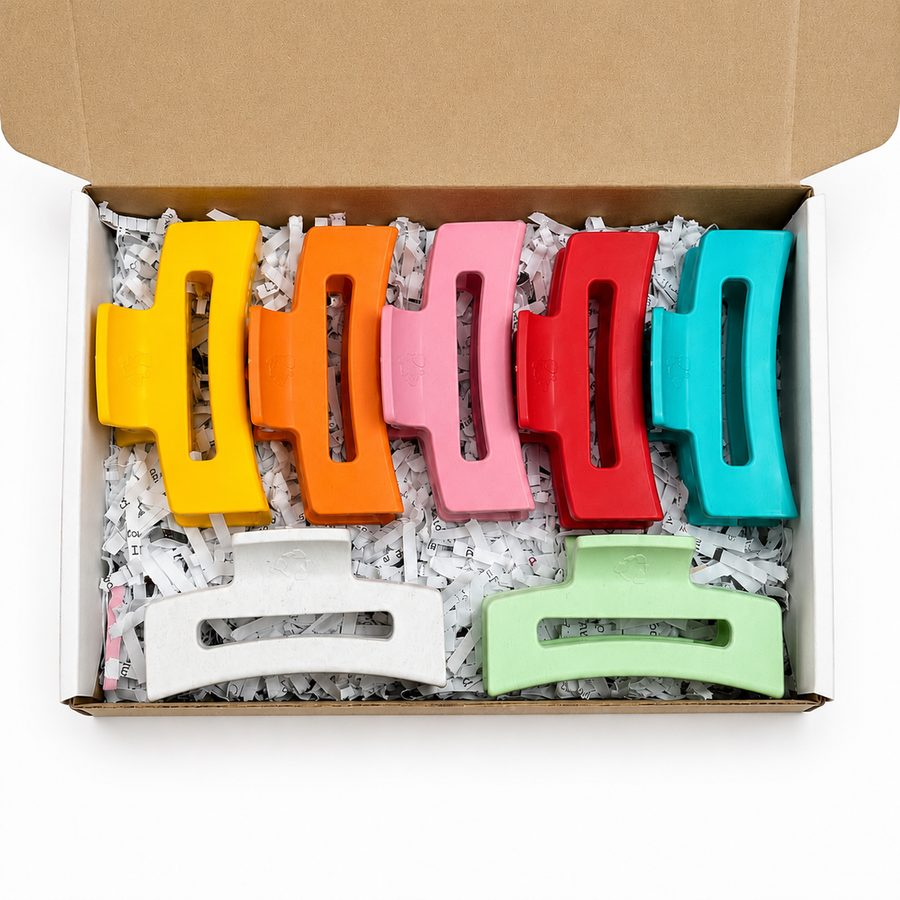

Comment un projet d'école secondaire de Lévis, parti d'une presse à panini, est devenu un manufacturier de 45 000 pinces par mois vendues dans 345 points de vente — et pourquoi les cinq dragons lui ont prêté 20 000 $ sans prendre une seule part.

Unique Plastique est une jeune entreprise manufacturière de Lévis qui récupère du plastique post-consommation et le réinjecte en pinces à cheveux 100 % recyclées, « les seules faites au Québec ».
Fondée par Alexandre Tanguay, aujourd'hui 19 ans, à partir d'un projet d'école secondaire — une presse à panini empruntée à sa grand-mère pour fondre des ratés d'imprimante 3D.
En moins de deux ans d'existence officielle, l'entreprise est passée de 3 000 pinces par mois à 45 000–60 000, a placé ses produits dans plus de 345 points de vente au Québec (dont plusieurs Jean Coutu), a raflé un prix national OSEntreprendre 2025, et a convaincu les cinq dragons de Dans l'œil du dragon en juin 2026 de lui prêter 20 000 $ sans prendre une seule part.
La proposition est simple et lisible : le plastique garde sa couleur d'origine, la pince porte une texture marbrée qui trahit sa provenance, et le client comprend d'un coup d'œil que son bac de recyclage sert à quelque chose. Le marketing est né sur TikTok et Instagram — des vidéos de cônes orange de chantier broyés en accessoires mode ont dépassé les 2,5 millions de vues.
| Raison sociale | Unique Plastique S.E.N.C. |
| NEQ | 3380145428 |
| Forme juridique | Société en nom collectif |
| Constituée | 1er septembre 2024 · immatriculée le 3 septembre 2024 |
| Siège | 16, rue du Tisserand, Lévis (Québec) G6V 7E4 |
| Production | dans les installations de Plastiques Gagnon, Lévis |
| Activité déclarée | code 1699 — procédé d'injection de plastique adapté au recyclage |
| Effectif au registre | 1 à 5 employés (mise à jour annuelle : 24 mai 2025) |
| Site | uniqueplastique.ca (Shopify) |
| Courriel distributeurs | distributeur@uniqueplastique.ca |
| Réseaux | @unique.plastique_ (IG) · @unique.plastique (TikTok) · Unique Plastique (FB) |

Le point de départ est une irritation d'élève. Alexandre Tanguay et son ami Antoine Lachance, tous deux au secondaire en sciences naturelles à Lévis, voient partir aux poubelles les ratés de l'imprimante 3D de leur école, et constatent la contamination des bacs de recyclage. Le site de l'entreprise raconte la scène sans détour :
« L'idée du recyclage nous semblait évidente lorsqu'on ne pouvait que jeter les échecs de l'imprimante 3D et lorsqu'on voyait la contamination dans les bacs. »
Page « À propos », uniqueplastique.caPremier prototype : faire fondre du plastique dans la vieille presse à panini de la grand-mère d'Alexandre pour couler des sous-verres. Deux ans d'essais suivent. Le premier produit vendu sera un porte-clés.
Unique Plastique S.E.N.C. est constituée le 1er septembre 2024 et immatriculée le 3 septembre. Alexandre a 17–18 ans, Antoine 18. L'équipe compte alors six personnes, toutes du même âge, toutes aux études à temps plein. Le modèle d'approvisionnement est déjà là, et il est astucieux : on ramasse gratuitement les pots de pilules dans les pharmacies et les bouteilles de shampoing dans les salons de coiffure, on les transforme, et on revend les pinces au même endroit.
« On prend leurs pots de pilules, on les transforme en pinces et on les revend en pharmacie après. »
Antoine Lachance, cofondateur — Le Soleil, avril 2025Volume à ce stade : plus de 50 kilos de plastique récupéré par semaine, environ 2 pinces par contenant. Les premières bourses collégiales servent à acheter l'équipement.
Trois choses arrivent coup sur coup.
Le prix. Quelques mois seulement après le lancement officiel, Unique Plastique est lauréate nationale 2025 du Défi OSEntreprendre, catégorie Exploitation, transformation, production, et reçoit aussi un prix spécial scientifique des Fonds de recherche du Québec au volet Chaudière-Appalaches. L'entreprise décroche également une reconnaissance au Grand Prix national de l'entrepreneuriat jeunesse.
L'usine. Plastiques Gagnon, un manufacturier de pièces de plastique de Lévis, loue de l'espace à l'entreprise.
« On a loué de l'espace à Alexandre parce qu'il a du drive. »
Guillaume Joly, directeur, Plastiques GagnonLa machine. En juillet 2025, achat d'une presse à injection. La cadence saute d'une pince aux quatre minutes à 180 pinces à l'heure, avec une cible de 250 à l'heure.
Le départ d'Antoine Lachance vers des études en médecine laisse Alexandre seul à la barre. L'équipe se recompose autour de quatre amis du secondaire, en quarts de 18 h à 23 h après les cours.
Le 17 juin 2026, Unique Plastique passe à Dans l'œil du dragon (saison 15, ICI Télé), aux côtés de Flyos, Mountain Coffee Co et Zensor Care. Alexandre demande 20 000 $ pour 10 %.
Les cinq dragons s'unissent et retournent une offre meilleure que la demande : un prêt de 20 000 $ sans aucune prise de participation, plus leur mentorat. Alexandre garde 100 % de son entreprise. Le segment fait exploser la demande — plus de 200 nouvelles commandes dans la foulée.
L'argent va au marketing, pas à la machinerie. Les données d'audience montraient 60 à 70 % d'hommes sur les vidéos — pour un produit dont le marché est majoritairement féminin. Alexandre retravaille le ton, l'énergie et le décor de ses vidéos pour corriger la cible.
Une pince à cheveux à mâchoire (claw clip), injectée en HDPE / PP recyclé, ressort en acier renforcé. Deux formats.
| Petite | Moyenne | |
|---|---|---|
| Taille | 6 cm | 9 cm |
| Cheveux | fins à moyens | moyens à épais |
| Prix courant | 11,99 $ | 14,99 $ |
| Prix distributeur (coûtant) | 7,19 $ | 8,99 $ |
| Prix suggéré en boutique | 12,00 $ | 15,00 $ |
| Marge distributeur | 40 % | 40 % |
C'est l'argument central, et il est répété mot pour mot sur chaque fiche produit :
« Chaque pince présente une texture marbrée unique, signature de notre procédé de recyclage, rendant chaque pièce authentique et différente. »
Fiches produit, uniqueplastique.ca

Le défaut de fabrication devient la preuve d'authenticité. Le mélange de plastiques d'origines différentes crée des veinures qui disent, sans texte, « je viens d'un bac de recyclage ».
« Notre objectif, c'est de montrer le plastique sous un nouvel angle, en laissant sa couleur authentique. »
Alexandre Tanguay, présidentSourcées localement, souvent gratuitement, et régulièrement mises en scène dans le contenu social :
Les éditions limitées nommées d'après leur déchet d'origine — Civière, Toilette rouge — transforment la traçabilité en objet de collection. Ce qui devrait être une gêne devient le nom du produit.
Collecte → tri → lavage → broyage en granules → fonte → injection dans un moule → pince. Entièrement développé à l'interne. Les moules sont conçus par Alexandre lui-même ; un moule d'acier pour un nouveau produit coûte jusqu'à 50 000 $, ce qui est le principal frein à la diversification.
Moyennes — 14,99 $ · Blanche, Charbon, Brun, Beige, Jade, Bleuet, Rouge, Noire, Rose, Orange Corail, Aqua, Jaune, Menthe (13 couleurs)
Petites — 11,99 $ · Noire, Brune, Bleu ciel, Orange · éditions limitées Baby pink (11,99 $), Toilette rouge (12,99 $)
Édition limitée · Bleu Marin — Civière, 15,99 $ (épuisée)
| Lot | Prix promo | Prix régulier | Rabais |
|---|---|---|---|
| Ton kit passe-partout — 6 pour 4 | 65,78 $ | 81,12 $ | 19 % |
| Collection Classique — 7 pour 5 | 79,30 $ | 104,93 $ | 24 % |
| Collection d'été — 7 pour 5 | 79,30 $ | 104,93 $ | 24 % |
| Le tout compris — Moyenne, 14 pour 9 | 139,35 $ | 209,86 $ | 34 % |
| Campagne de financement — Boîte de 12 | 84,00 $ (8 moyennes + 4 petites) | ||
Collections publiées : frontpage, artisanat, édition limitée de la semaine, pinces flexibles, distribution, petites, lots, Noël, été, collection été pharmacie.
Quatre canaux, chacun avec sa propre mécanique.
Boutique Shopify, français, multidevise (CAD par défaut, EUR, USD, GBP, CHF…), livraison gratuite dès 50 $. Applications installées : Judge.me (avis), BSS Store Locator, HulkApps Form Builder, Shopify Forms.
4,89 ★ sur 1 236 avis. Un produit à 12–15 $ qui accumule plus de mille avis vérifiés à cette note-là a un vrai product–market fit, pas seulement une viralité.
L'outil de localisation du site déclare 345 emplacements, et la fiche « campagne de financement » en annonce plus de 350. Concentration en Chaudière-Appalaches, Québec, Montréal et Estrie, avec des points jusqu'en Abitibi, sur la Côte-Nord et en Gaspésie. Plusieurs Jean Coutu. Une opération conjointe est menée avec Nora Pharma.

C'est la partie la plus élégante du modèle. Le site vend l'adhésion en quatre points :
« Ne ramassez pas vos pots de pilules avant ! On va vous écrire quand on passera. »
Fréquence : tous les 2 à 4 mois selon le secteur, avec un préavis de 1 à 2 semaines. Plastique visé : surtout du HDPE (pots de pilules, bouteilles de shampoing).
Page fournisseur / distributeur, uniqueplastique.caLe même camion livre les pinces et repart avec la matière première du prochain lot. La pharmacie est simultanément fournisseur et détaillant. Le coût d'acquisition de matière tend vers zéro, et le détaillant a une raison de participer qui dépasse la marge.
Positionné frontalement contre le classique du financement scolaire québécois :
« Le modèle est simple, inspiré du principe de la "boîte de chocolat" : aucune gestion complexe, tu gères ta propre mini-campagne. »
Pas de chocolat. Pas de produits jetables. Un produit durable et local.
Boîte de 12 à 84,00 $, revendue 15 $ / 12 $ l'unité (168 $ de ventes) → 50 % de la vente revient directement au jeune. Aucun minimum, aucun retour compliqué. Une billetterie Zeffy accompagne le programme.
| Indicateur | Valeur | Date / source |
|---|---|---|
| Production mensuelle | 45 000 – 60 000 pinces | 2026, après emménagement chez Plastiques Gagnon |
| Production mensuelle (avant) | 3 000 pinces | avant 2025 |
| Cadence machine | 180 pinces/h (cible 250) | après juillet 2025 |
| Cadence artisanale (avant) | 1 pince / 4 minutes | avant juillet 2025 |
| Pinces vendues | 30 000+ (une source : 20 000+) | 2026 |
| Points de vente | 345 (site) / « plus de 350 » (fiche produit) | août 2026 |
| Avis clients | 1 236 avis · 4,89 ★ | août 2026, Judge.me |
| Employés | 5 (Alexandre + 4) ; 4 embauches après Dragon | 2026 |
| Matière récupérée | 50+ kg / semaine | 2025 |
| Rendement | 1 cône orange ≈ 110 pinces · 1 contenant ≈ 2 pinces | 2026 |
| Vues sur une seule vidéo | 2,5 M+ | 2026 |
| Investissement Dragon | 20 000 $, prêt, 0 % d'équité | 17 juin 2026 |
| Commandes post-diffusion | 200+ | juin 2026 |
| Coût d'un moule d'acier | jusqu'à 50 000 $ | 2026 |
| SKU actifs | 26 | 7 août 2026 |
Québec d'abord et massivement. Ventes internationales confirmées par les réseaux sociaux vers la Suisse, la France, la Belgique, le Royaume-Uni et les États-Unis. La boutique est configurée pour la multidevise mondiale, mais le contenu reste unilingue français — l'international est subi (pull par le contenu viral) plutôt que construit.
| Nom | Rôle (selon le site) |
|---|---|
| Alexandre Tanguay | Président. Recherche et développement, production, conception des moules, développement de produits. Assure aussi les relations publiques et le marketing. |
| Tristan | Associé au marketing. Gestionnaire des ventes et des relations clients. |
| Florent | Technicien spécialisé et opérateur. |
| Mathis | Responsable adjoint de la production et opérateur. |
| Olivier | Opérateur et responsable de la production. |
| Antoine Lachance | Cofondateur, parti poursuivre des études en médecine. |
Alexandre Tanguay a été coprésident d'honneur de la 28e édition du Défi OSEntreprendre Chaudière-Appalaches — l'entreprise est passée de participante à figure de proue régionale en une année.
Le président cumule R&D, production, moules, produit, RP et marketing. C'est la force (cohérence totale, décision instantanée) et la fragilité (tout passe par une personne) de l'entreprise.
Symbole de recyclage formé de trois pétales verts pleins reliés par des arcs noirs terminés par des points — une boucle de Möbius stylisée, organique plutôt que technique. À droite, le mot-symbole « unique plastique » en bas-de-casse, sans-serif géométrique arrondi, sur deux lignes. Détail signature : les descendantes et terminaisons portent des points ronds qui font écho aux points des arcs du symbole.
Lecture : le vert dit l'écologie, le noir dit l'industriel. Le bas-de-casse et les formes rondes disent l'accessibilité, la jeunesse, le non-institutionnel. C'est un logo de manufacturier qui refuse de ressembler à un manufacturier.
#2B9359#23A44D#D5EBD8#A42325#000000#F1F1F1#4ACCD4#DDF4CF#B6D5BD#FDD327#FF9F48#CA3B3A#FCC1C9#C7C0BA#726155#000000Le contraste est frappant : identité de marque verte et sobre, gamme produit franchement colorée. La marque parle d'écologie ; le produit parle de mode. C'est exactement le bon partage.
Site en Inter (400 / 700). Le mot-symbole du logo emploie une géométrique arrondie distincte — la marque n'utilise donc pas sa police de logo dans son interface.




Tutoiement, phrases courtes, émojis fonctionnels (♻️ 💪 ✨ 🇨🇦 🌍 🚚), urgence assumée (« ‼️ ÉDITION LIMITÉE ‼️ », « Une fois épuisé, c'est fini ! »). Registre TikTok natif — parfois familier jusqu'à la faute (« Celle-ci on été fait à base de civière;) »), ce qui passe pour de l'authenticité auprès de la cible et grince un peu sur le canal B2B.
♻️ Plastique recyclé localement — alternative durable aux pinces jetables
💪 Tenue forte et stable — idéale pour cheveux moyens à épais
✨ Design élégant et intemporel — minimaliste, naturel et solide
🇨🇦 Fabriquée au Québec — production locale responsable
🌍 Impact réel sur l'environnement — réduction du plastique à la source
Vision — « Notre objectif est simple, recycler du plastique en objets durables, esthétiques, colorés et visiblement recyclés. Tout cela dans le but de sensibiliser et de mettre en contact les Québécois avec le recyclage. »
Mission — « C'est avant tout d'inspirer, de motiver, de sensibiliser. Montrer le recyclage et trouver la juste valeur du plastique. »
« Nous avons débuté avec une simple presse à panini, et aujourd'hui, nous opérons dans une véritable usine avec des équipements professionnels. »
Page « À propos », uniqueplastique.ca« visiblement ». L'entreprise ne vend pas du recyclage, elle vend la preuve visible du recyclage. C'est ce qui la distingue de tout concurrent qui produirait une pince recyclée mais uniforme.
| Canal | Compte | Notes |
|---|---|---|
| Site | uniqueplastique.ca | Shopify, FR, multidevise, livraison gratuite 50 $+ |
| @unique.plastique_ | Reels de recyclage : masques, chaises, cônes | |
| TikTok | @unique.plastique | Le moteur de croissance. Vidéos à 2,5 M+ vues |
| Unique Plastique | Page très engagée | |
| Alexandre Tanguay + page entreprise | Canal B2B / distributeurs |
Contenu type : broyage et injection filmés en direct, « d'où vient cette pince », déballages, avant/après matière → produit. Le format transformation est le cœur du succès — le spectateur voit littéralement le déchet devenir l'objet.
Blogue (3 articles, tous datés du 13 janvier 2025) : Le recyclage au Québec : où et comment recycler le plastique efficacement · L'histoire du recyclage au Québec : évolution et impact · Les différents types de plastiques et leur recyclabilité. Contenu SEO éducatif, propre mais non maintenu depuis dix-huit mois.
| Date | Média | Sujet |
|---|---|---|
| 6 avr. 2025 | Le Soleil | « Deux jeunes de Lévis lancent leur entreprise de recyclage » |
| 2025 | Journal de Lévis | « Une seconde vie au plastique » |
| 2025 | Radio-Canada — Le Téléjournal Québec | « De projet scolaire à jeune entreprise » |
| 2025 | Défi OSEntreprendre | Lauréat national · prix scientifique FRQ |
| 22 oct. 2025 | Le Soleil Affaires | « Unique Plastique passe à la vitesse supérieure » |
| 17 juin 2026 | Radio-Canada — Dans l'œil du dragon S15 | Les 5 dragons s'unissent |
| 18 juin 2026 | Le Soleil / Le Quotidien / La Tribune | « Une jeune pousse de Lévis séduit les dragons » |
| 2026 | Radio-Canada | « À 19 ans, il transforme le plastique en pinces à cheveux » |
| 2026 | Clin d'œil | « Ces accessoires viraux sont fabriqués à partir de cônes oranges » |
| 2026 | Silo 57 | Cônes orange → pinces |
| 2026 | 95.7 KYK | « Le succès fou d'Unique Plastique » |
| 2026 | Monde de Stars / Showbizz | Couverture Dragon |
La boucle fermée pharmacie. Fournisseur et détaillant sont la même personne. Le coût d'acquisition de matière est quasi nul, le détaillant a un intérêt qui dépasse la marge, et l'histoire se raconte toute seule au comptoir. C'est un avantage structurel, pas une astuce marketing.
La preuve visible. La texture marbrée rend la promesse invérifiable — « recyclé » — vérifiable à l'œil. Aucune certification à payer, aucun label à défendre. L'objet est son propre argument.
Le contenu comme moteur. 2,5 M de vues sur une vidéo, pour une entreprise de cinq personnes, ça ne s'achète pas. Le format transformation est reproductible à l'infini : chaque nouveau déchet absurde est un nouveau contenu.
Un ancrage québécois défendable. « Les seules pinces faites au Québec » est une position que personne n'occupe et qui est coûteuse à contester — il faut une presse à injection, des moules et un réseau de collecte.
La preuve sociale. 4,89 ★ sur 1 236 avis. Le produit tient ses promesses matérielles, pas seulement narratives.
Dépendance à une personne. Alexandre Tanguay est président, R&D, moules, production, produit, RP et marketing. L'entreprise n'a pas encore de deuxième cerveau sur les fonctions critiques.
Diversification bloquée par le capital. Un moule d'acier coûte jusqu'à 50 000 $. Les projets évoqués — peignes, jouets pour chiens, brosses à dents, équipement sportif, médailles — attendent tous ce chèque. C'est le vrai goulot, pas la demande.
Un seul produit. 26 SKU, mais une seule forme en deux tailles. Toute la croissance repose sur la pince.
Marketing à recalibrer. L'entreprise l'a elle-même diagnostiqué : 60–70 % d'hommes dans l'audience pour un produit acheté majoritairement par des femmes. Le contenu viral et le contenu qui convertit ne sont pas le même contenu.
International subi. Ventes en Europe et aux États-Unis, mais aucune version anglaise du site. La demande dépasse l'infrastructure commerciale.
Blogue dormant. Trois articles, tous du même jour, rien depuis. Le socle SEO existe mais n'est pas entretenu.
Statut juridique. Une S.E.N.C. n'offre aucune responsabilité limitée aux associés. Pour une entreprise qui achète des presses, loue de l'espace industriel et vend en pharmacie, l'incorporation devient une question à trancher.
/products.json)